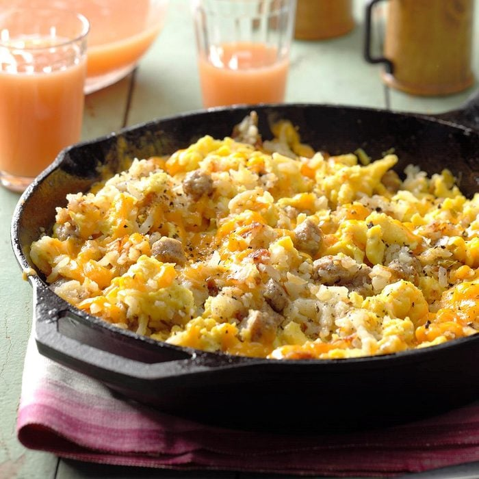

Campfire Hash
All recipes

Description:
Good Ol'hash will make your day!
Ingredients:
- 1/4 cup butter, cubed
- 2 packages (20 ounces each) refrigerated shredded hash brown potatoes
- 1 package (7 ounces) frozen fully cooked breakfast sausage links, thawed and cut into 1/2-inch pieces
- 1/4 cup chopped onion
- 1/4 cup chopped green pepper
- 12 large eggs, lightly beaten
- Salt and pepper to taste
- 1 cup shredded cheddar cheese
Steps:
- In a deep 12-in. cast-iron or other heavy skillet, melt butter. Add the potatoes, sausage, onion and green pepper. Cook, uncovered, over medium heat until potatoes are lightly browned, 15-20 minutes, turning once.
- Push potato mixture toward the edge of pan. Pour eggs into center of pan. Cook and stir over medium heat until eggs are completely set. Season with salt and pepper. Reduce heat; stir eggs into potato mixture. Top with cheese; cover and cook until cheese is melted, 1-2 minutes.